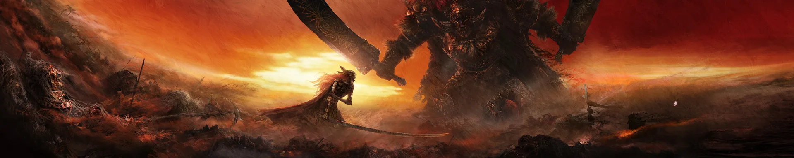
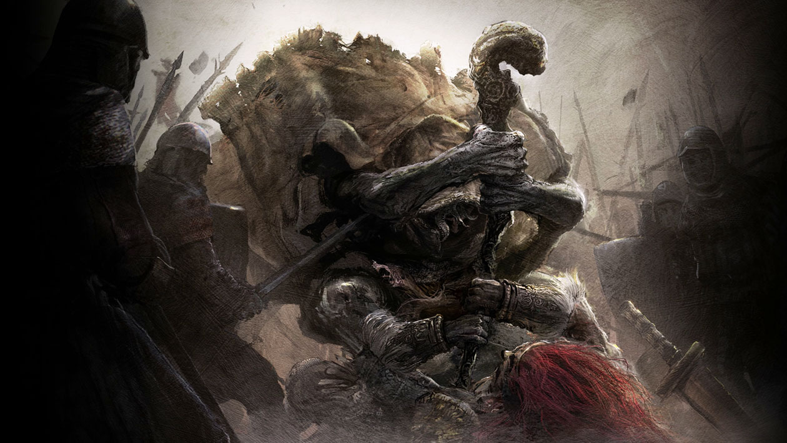
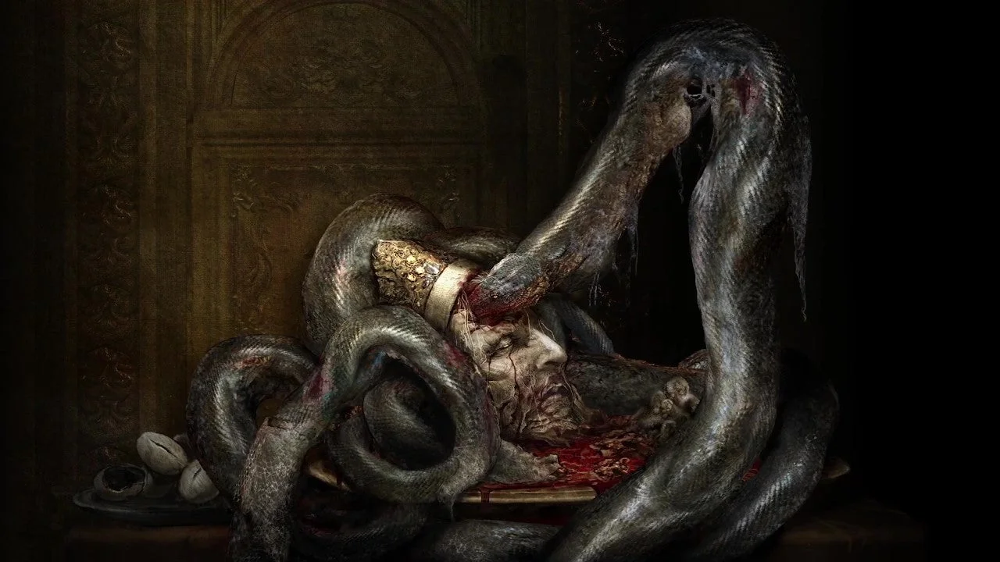
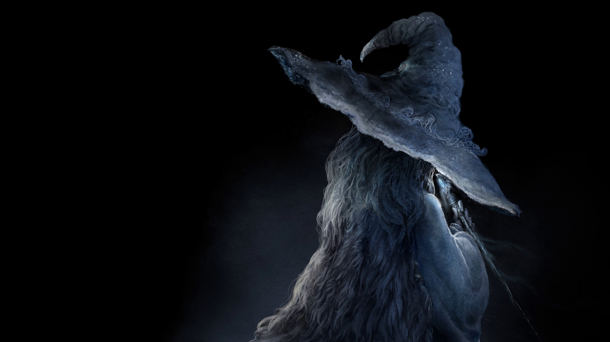
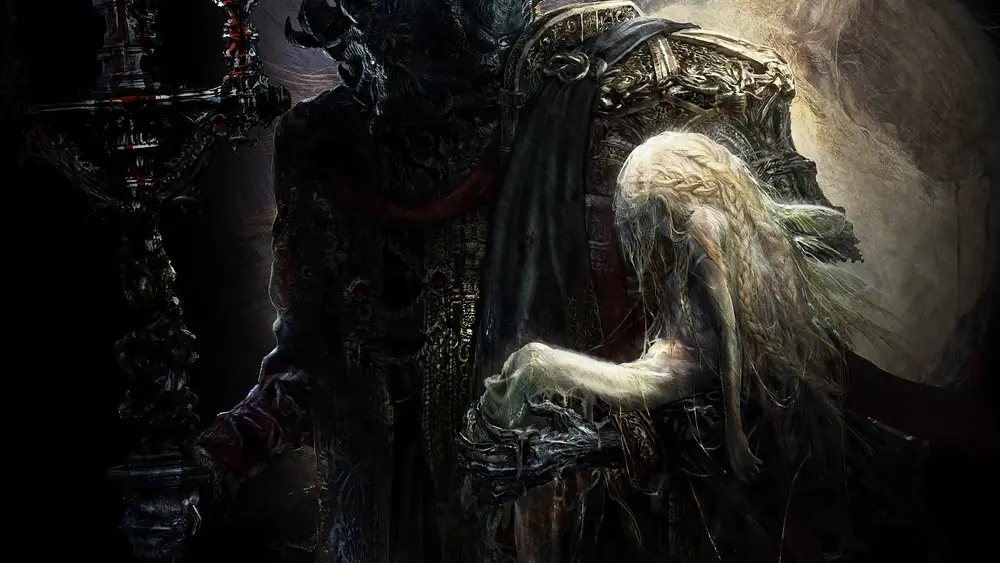

The Knight of The Black Knives
During the Golden Age of the Erdtree, a fragment of the Rune of Death was stolen by Lunar Princess Ranni, who used it to forge godslaying knives. These knives were used by the Black Knife Assassins who, one night, entered Leyndell and assassinated Godwyn the Golden. As the assassins fled the capital, an assassin named Tiche was killed protecting her mother Alecto, the leader of the assassins.
Ranni killed herself at the moment of Godwyn's death, causing the Cursemark to break into two half-wheels rather than form a circle. While Ranni died in the flesh, Godwyn's soul alone perished, sentencing him to live in death. His body was interred in the Erdtree's roots beneath Leyndell, where it mutated and warped. Later, the Rune of Death began to spread through the roots in the form of Deathroot, giving rise to Those Who Live in Death.
The Night of Black Knives became the catalyst for the Shattering. In response to Godwyn's death, Queen Marika the Eternal used her hammer to shatter the Elden Ring. Elden Lord Radagon, her alter ego, attempted in vain to repair the Elden Ring. As punishment for her offense, the goddess Marika was imprisoned within the Erdtree.
Consequently, the shattering of the Elden Ring corrupted the Golden Order, and lead to a Shattering War that would leave the Lands Between in ruin.
The shards of the Elden Ring, known as Great Runes, were inherited by Marika's Demigod offspring. Tainted by the strength of the Great Runes, the Demigods warred, with the conflict becoming known as the Shattering.
THE SHATTERING
The Battle For Caelid
General Radahn, famed as the scourge of the stars, led the Redmane Knights during the Shattering. They were met in battle by Malenia, Blade of Miquella, and her undefeated army of Cleanrot Knights. They fought to a standstill, until Malenia unleashed her Scarlet Rot, ending the duel inconclusively. Radahn was driven mad by the rot and was forced to wander the battlefield as a mindless beast, devouring the corpses of those who died during the conflict, whether they be a friend or foe. Malenia, who became comatose, was carried back to the Haligtree of her brother Miquella by Cleanrot Knight Finlay, one of the few survivors of the battle.
Morgott Fighting Radahn
Morgott, a Demigod of the Golden Lineage who was born as a graceless Omen, inherited a Great Rune known as the anchor ring which houses the base, proving his pedigree as a member of the Golden Lineage and as the Lord of Leyndell. Taking on the moniker of the "veiled lord", Morgott ruled over Leyndell, slaughtering countless champions in defence of the Erdtree under the guise of Margit, the Fell Omen.
Rykard being Devoured by the Blasphemous Serpent
Praetor Rykard, whose noble ambitions had turned to gluttonous depravity, fed himself to the blasphemous serpent after obtaining his Great Rune. His consort, Tanith, established the recusants of Volcano Manor, waging a war against the Erdtree in his stead.

Godrick The Grafted
Godrick, a distant relation of Marika whose blood was sorely diluted, escaped the capital by hiding amongst the womenfolk, bringing with him a multitude of treasures including the Mimic's Veil. He hid from General Radahn in Stormveil Castle, and later insulted Malenia, only to grovel for mercy after he himself was defeated at her hands. He turned to the act of grafting in order to attain power, so that one day he could return to the capital.
Ranni the Witch
Ranni, the instigator of the Night of Black Knives, is said to have cast aside her Great Rune, and its present whereabouts are unknown.
Mohg Kidnapping Miquella
Mohg, known only as the Lord of Blood, began building his dynasty underground in secret. To this end he abducted Miquella from his resting place in the Haligtree, wishing to raise the Empyrean to full godhood and become his consort.However, Miquella never responded to Mohg, no matter how hard the omen tried, and continued to remain asleep in his cocoon.